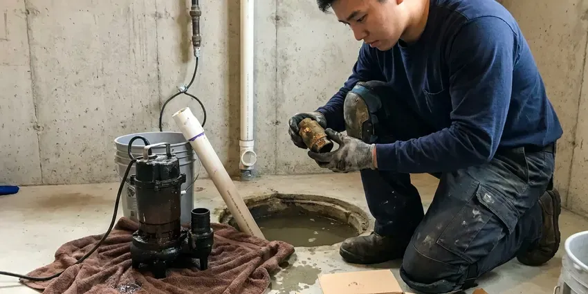
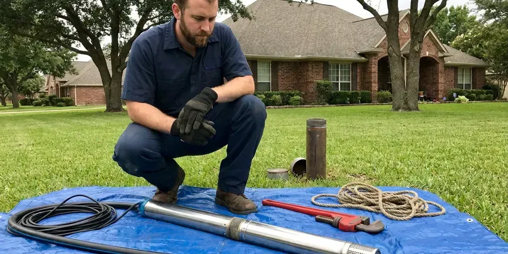

Plumbing Replacement in Millsboro, DE
At GNV Plumbing, we provide professional plumbing replacement across Millsboro, DE, handling everything from water heaters to main sewer lines with precision and care.
- Warrantied Work
- Old Equipment Hauled Away
- Upfront Replacement Pricing
- Skilled, Certified Plumbers
Replace Failing Plumbing Before It Lets You Down in Millsboro, DE.
Do not let old plumbing cause bigger issues. Contact GNV Plumbing for a professional assessment today.
Reliable Plumbing Replacement Services in Millsboro, DE
GNV Plumbing specializes in full-service plumbing replacement throughout Millsboro, DE. From corroded pipes to failing water heaters, our licensed plumbers make sure your new system is installed correctly and efficiently, meeting all local codes.
Our expertise includes:
- Well pump and pressure tank replacements
- High-Efficiency Water Heater Replacements
- Water heater and tankless unit replacements

Additional Plumbing Replacement Services in Millsboro, DE
When repairs are no longer enough, our replacement services in Millsboro, DE deliver durable upgrades that restore full performance.




Sump Pump Replacement near Millsboro

Professional well pump replacement, Millsboro


Customers
Why Choose GNV Plumbing for Plumbing Replacement in Millsboro, DE?
Our commitment to quality means we only use parts and methods that stand up to the local climate. This helps your new plumbing replacement last for many years.
- Local Knowledge, We know Millsboro's plumbing codes and common issues, delivering compliant and effective replacements.
- Certified Plumbers, Our technicians are licensed, insured and regularly trained on current plumbing technologies and safety protocols.
- Quality Materials, We use only reputable, long-lasting plumbing components from proven brands like Rheem, AO Smith and Moen.
Citywide Coverage
We provide plumbing replacement across Millsboro, from older homes with galvanized pipe to newer homes with first-generation water heaters reaching the end of their life. Our trucks carry common equipment and parts.
Experienced Team
Our team of plumbers brings extensive experience to every plumbing replacement project in Millsboro. They are highly trained in diagnosing complex issues and completing precise replacements, from detailed pipe work to major appliance installations.
Safety-First Approach
Before, during and after any plumbing replacement in Millsboro, our team prioritizes the safety of your property and family. We make sure all new installations are robust, leak-free and meet strict safety standards.
Trusted Certified Millsboro Plumbing Services Professionals
At GNV Plumbing, we take pride in providing certified plumbing services throughout Millsboro, DE. Backed by recognized industry credentials, our experienced plumbers combine technical skill with genuine customer care. Whether it is repair, installation, or maintenance, we follow strict safety and quality standards to deliver long-lasting results you can trust.
Call Us Now PHCC Plumbing Contractor Recognition
PHCC Plumbing Contractor Recognition Better Business Bureau (BBB) Accreditation
Better Business Bureau (BBB) Accreditation Angi Certified Pro
Angi Certified Pro ISO 9001 Quality Management Certification
ISO 9001 Quality Management CertificationDependable Plumbing Replacement Services in Millsboro, DE
Water Line Replacement in Millsboro, DE
A leaking main water line can lead to major water loss, high bills and foundation damage, which is a serious concern for homes on slab foundations. Our water line replacement services address issues like corroded pipes, leaks or low water pressure. We locate the leak, excavate the area if necessary and replace the damaged section or the entire line with durable PEX or copper piping. We make sure of a secure, leak-free connection from the meter to your home, restoring reliable water flow.

Whole-Home Pipe Replacement in Millsboro
Homes with multiple pinhole leaks, galvanized pipe or polybutylene may benefit from a complete repipe. We replace supply lines with PEX or copper, often rerouting through the attic to avoid future slab leaks. Most repipes take two to four days with water restored each evening when possible. Drywall openings are patched when the work is finished.
Tankless Water Heater Replacement in Millsboro, DE
Upgrade to endless hot water with a tankless water heater replacement. These units heat water on demand, saving energy and space, which is a great benefit for Millsboro homes. We focus on replacing older tankless units or converting from traditional tank heaters to high-efficiency tankless models from brands like Rinnai and Noritz. Our service includes assessing your home's gas line capacity or electrical service, ensuring proper venting and precise installation to maximize efficiency and longevity.
Well Pump & Pressure Tank Replacement in Millsboro
For rural properties in and around Millsboro that rely on well water, a failing well pump or pressure tank can leave you with no water at all. We diagnose issues with your current well system and provide expert replacement for submersible or jet pumps. We also replace faulty pressure tanks, so your well system maintains consistent water pressure and your pump lasts longer. Proper sizing and installation are crucial for efficient operation and a reliable water supply.
Well Pressure Tank Replacement in Millsboro
If your well pump is cycling too frequently or you have inconsistent water pressure, your pressure tank might need replacing. GNV Plumbing installs new well pressure tanks, so your well system operates efficiently and your well pump lasts longer. We correctly size the tank to your system in Millsboro, optimizing water delivery and energy usage.
Sewer Line Replacement in Millsboro
Persistent sewer backups, foul odors or lush spots in your yard can signal a failing sewer line. Older homes in the north often have basements, while many newer and coastal homes sit on slabs or raised foundations. We offer complete sewer line replacement using trenchless technology whenever possible, minimizing disruption to your landscaping. For more severe damage, traditional excavation is performed with careful attention. We make sure new lines are properly graded, connected and compliant with local Millsboro plumbing codes, preventing future blockages and costly repairs.
Pipe Replacement & Whole-Home Repiping in Millsboro, DE
Homes in Millsboro, DE with older galvanized steel or polybutylene pipes often deal with low water pressure, discolored water or frequent leaks. A whole-home repipe with new PEX or copper piping can greatly improve water quality and pressure and eliminate leak concerns. We carefully plan and complete repiping projects, minimizing disruption and making sure all new pipes are properly routed, insulated and connected, providing a durable and efficient plumbing system for decades to come.

Gas Line Replacement in Millsboro
Old or damaged gas lines pose a serious safety risk and require immediate attention. If you suspect a gas leak or your gas lines show signs of corrosion or age, our licensed plumbers in Millsboro can perform safe and code-compliant gas line replacement. We use appropriate materials like black steel pipe or corrugated stainless steel tubing (CSST) for secure installations, making sure all connections are leak-tested and meet strict safety regulations for your home's protection.
Plumbing Replacement Near Me in Millsboro, DE
No matter where you are located in Millsboro, our skilled plumbers can reach you quickly to assess and address your plumbing replacement needs. We take pride in being the plumbing replacement specialists the community relies on for quality and efficiency.
When you need dependable plumbing replacement services near me in Millsboro, DE, GNV Plumbing is your local expert. We know the local plumbing infrastructure and its challenges well, which lets us provide effective and tailored solutions.
GNV Plumbing at a Glance
- Fully licensed plumbing team covering Millsboro, DE
- Same-day appointments and 24/7 emergency response
- Clear written estimates, no hidden fees
- 4.8-star rated by 849+ Delaware customers
Millsboro Map
Millsboro Information
- Population
- 7,637
- Area codes
- Local
- Service area
- Millsboro and communities within 40 miles
- Nearby
- Georgetown, Seaford, Milford, Dover
Effective plumbing replacement is important for homes in Millsboro, DE, since aging pipes, hard water and soil movement can all affect pipe integrity over time.
Expert Services
Trust our professionals for reliable GNV Plumbing solutions in Millsboro, DE.
Our Specialized Plumbing Services in Millsboro, DE
At GNV Plumbing, we provide a complete range of plumbing services across Millsboro, DE. From leak detection to full system installations, our team ensures fast, precise, and affordable service for both residential and commercial properties. Explore our core services below:


How Our Plumbing Replacement Process Works in Millsboro, DE
Our plumbing replacement process is built around efficiency and transparency, so you understand every step of the project.
Request a Quote
Start by calling us at (302) 406-6354 or filling out our online form to schedule an initial consultation. We will discuss your plumbing issues and replacement goals.
On-Site Assessment
A licensed plumber will visit your Millsboro property to carefully assess your plumbing system, diagnose the problem and recommend the best replacement options.
Detailed Proposal
You will receive a clear, upfront estimate outlining the scope of work, materials, timeline and all associated costs for your plumbing replacement project.
Frequently Asked Questions About Plumbing Replacement in Millsboro
The cost of plumbing replacement in Millsboro, DE varies widely depending on the type of service. A water heater replacement can range from $1,200 to $3,500, while a sewer line replacement might be $3,000 to $15,000 or more. Whole-home repiping can cost between $4,000 and $15,000. We provide detailed, clear estimates after an on-site assessment.
The timeline for plumbing replacement depends on the complexity of the job. A water heater replacement usually takes 2 to 4 hours. A main water line or sewer line replacement can take 1 to 3 days. Whole-home repiping projects typically span 3 to 7 days, depending on the size of the house and accessibility.
The timeline depends on the complexity of the job. A water heater replacement typically takes 2 to 4 hours. A major project like a full house repipe or sewer line replacement can take 1 to 5 days. We will provide an estimated schedule during your consultation.
Consider the age of the equipment, the cost of repair compared with replacement and how often it has needed service. We give you both options with pricing so you can decide.
Yes, many major plumbing replacement projects, such as water heater replacement, sewer line replacement or whole-home repiping, require permits from the City of Millsboro or the local municipal authority. GNV Plumbing handles all necessary permitting so your project complies with local building codes and regulations.
Climate, freezes and soil type all affect how long plumbing lasts. Salt air in coastal parts of Delaware speeds corrosion on outdoor fittings, hose bibs, and exterior metal pipe. Freeze-thaw cycles can damage pipes, and corrosive or shifting soils can accelerate pipe degradation. Older homes in the north often have basements, while many newer and coastal homes sit on slabs or raised foundations. Our replacement solutions are chosen to withstand these local conditions for lasting durability.
Yes, for critical issues like burst pipes or non-functional water heaters, GNV Plumbing offers emergency plumbing replacement. We understand that some plumbing failures cannot wait, and we put first urgent situations to restore safety and function to your Millsboro home.
GNV Plumbing stands behind our work with comprehensive warranties on both labor and materials. Specific warranty terms vary by product and service, but we always back your peace of mind with real guarantees.
What People Are Saying About Our Plumbing Experts?

Laura S.
I scheduled a water heater replacement, and the team made the process smooth and affordable. The new unit works perfectly, and they cleaned up after completing the job.
Water Heater Replacement · Georgetown, DE
Emily R.
I called GNV Plumbing for plumbing repair, and the technician was fast, polite, and thorough. They explained the problem clearly and fixed it the same day. I will definitely hire them again. Highly recommended!
Plumbing Repair · Seaford, DE
James P.
Our commercial plumbing system had a leak under the sink, and GNV Plumbing handled it professionally. The plumbers arrived quickly and restored everything without disruption to our customers.
Commercial Plumbing · Milford, DERobert G.
The trenchless sewer replacement saved our front yard. They walked us through the camera inspection footage first so we knew exactly what we were paying for.
Sewer Line Replacement · Smyrna, DE
Mark T.
When our office needed drain cleaning, GNV Plumbing provided quick, reliable service. The plumber arrived on time and made sure every drain flowed perfectly before leaving. Very satisfied.
Drain Cleaning · Seaford, DESofia M.
Two new toilets installed in one visit, no mess left behind, and the tech even adjusted a faucet he noticed was dripping. Fair pricing and really friendly.
Toilet Installation · Dover, DE